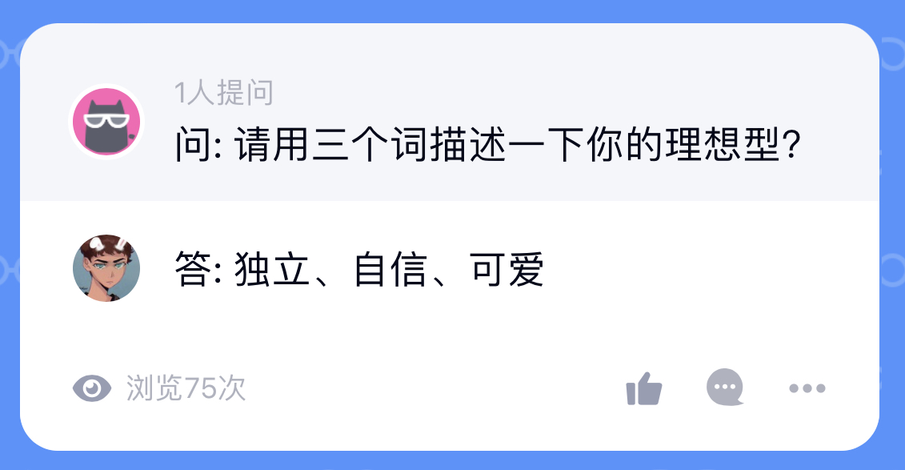

一約既定萬山難阻
我等你
8 18th, 2022 10:40
我不知道你会不会主动看,但我想着还是写一点什么。
其实，我还是很纠结的，我也不知道目前我们属于什么关系，至少在我这里我还不清楚，或许你认为我是男朋友or前男友，这听起来似乎很渣。
算了md，不写了。去写作业去了。
10 30th, 2022 1:20
这也过去了四个月，今天突然想起了这个，那就再接着写点。
你大概率不会看到，就当我在碎碎念吧。
首先，从寒假开始，再将两个多月的时间总体来说我过的很开心，是我为数不多在的没有迫切想要开学的一个假期。从我准备期末开始开始，再到陪你去商丘考试，我们一起去看阿凡达，然后是回家后一起逛街，一起去吃各个馆子，一起放烟花。这个寒假我们一起做了很多事，这是很美好的回忆，但这些事情里也包含着我很多的拧巴与纠结。
我能感觉到的热烈的情感表达，也能知道你某些时候有的失落沮丧，甚至这些失落时刻，一大部分可能因为我。
我从去年暑假之后对你就很少有像之前那样亲昵的称呼，可能是觉得我们没事实质上的情侣关系，也可能是我不好意思叫出口了。
我看到你每天说晚安，经常bb bb的叫，我会觉得不舒服，我的意思是，不是对你这样的称呼感到不舒服，而是对我自己，我觉得我不配。
我不知道该怎么处理我们之间的关系，我说等你考上我们就给你一次机会，这让我觉得自己很惭愧，我像一个受尽偏爱的却又趾高气昂小丑。
这让我觉得我们之间的关系是不对等的，我很难接受这样，我想起了很久之前，我在QQ上的一个匿名问答，我说我的理想型是「独立、可爱、自信」的，这是我和前任「准确的说是前前」分开好一段时间后的回答，也是对我印象中的他的描述，后来我才知道,不是我喜欢这些点，而是我当时还在怀念着他。

“喜欢一个人不是让他变成自己喜欢的样子，而是因为他是这个样子才会有喜欢。”
很难有人去定义什么是喜欢，但我知道在你22年2月13号给我发那份TXT的时候，我看完哭了很长时间，我以为我们不能在一起了，我能确定那时我很喜欢你。
在你22年6月11号发给我哭着唱富士山下的时候，我哭着听了很多遍，我知道那时我还是很喜欢你，只是我想结束了，我谈的恋爱很少，但我谈过的恋爱都很累。
后来我给你说，等你上岸了我们可以在试着再一次，也是从那时候开始，让我觉得我们的关系开始变得不对等，这让我觉得自己很可恶，感情是怜悯？是施舍？
我给你说过，我把所谓的「上岸」当成一个来说服自己的契机，我以为这样似乎可以让我们更近一点？也或许，就像周莎莎说的那样，这只是我一个很懒的借口，即使有了这次上岸，之后还会有更多的借口。
我现在也分不清自己是怎么想的。
balabala说了很多，都是一些车轱辘话，之前也说过，反反复复也就这样。不写了，要准备汇报的PPT了。
哦对，还是得交代一下为什么想到写这些，主要是因为你昨天发的和李福聊天的截图，让我觉得很羞愧，我没你描述的那么好，我们之间的关系，不像你给他说的那般。
「如人饮水、冷暖自知」
我其实想告诉你，不要给别人发那些，但我知道每个人都有权利向自己的朋友倾诉与表达，我不能干预，所以我只能把这些话写在这个你大概率不会看的地方。
3 03th, 2023 13:10